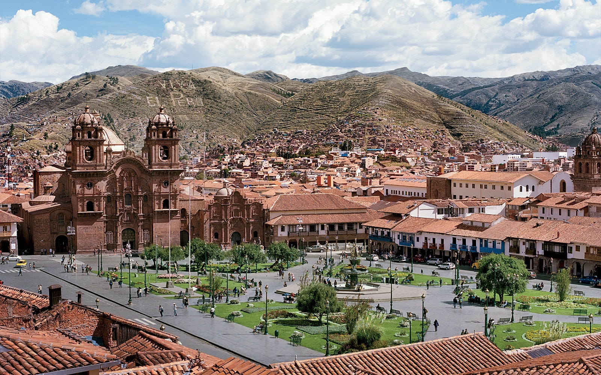
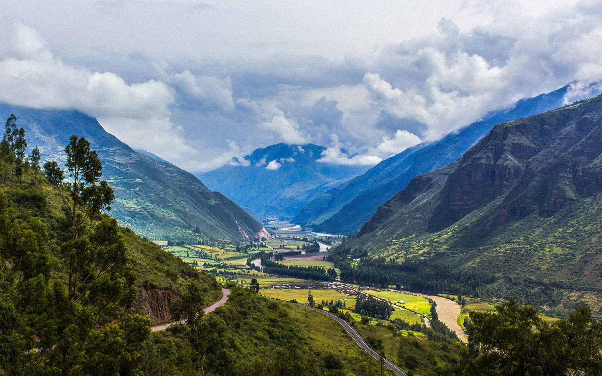
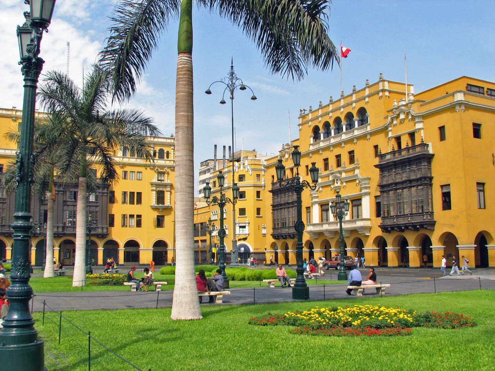

 Machu Picchu
Machu Picchu
Impresionante ciudad incaica levantada por sobre los 2.360 metros sobre el nivel del mar, sobrecogedor paisaje de murallas, terrazas y rampas que parecieran esculpidas en la roca misma, inmersas entre majestuosos picos de montañas, acantilados y el verdor de la floresta amazónica.
Declarada hoy Patrimonio Mundial por la UNESCO y una de las Siete Maravillas del Mundo Moderno, permite recrear a través de sus templos, palacios y escalinatas, lo que alguna vez fue la construcción más esplendorosa edificada por el imperio Inca, comprendiendo una extensa área de 530 metros de largo por 200 de ancho, que incluye al menos 172 recintos.
 Arequipa
Arequipa
Apodada como la Ciudad Blanca, una ciudad que encanta por su apariencia colonial, con un despliegue de arquitecturas en piedra volcánica blanca y un hermoso centro histórico declarado Patrimonio de la Humanidad por la UNESCO.
Sitios de especial interés, son la Plaza de Armas con su catedral neoclásica, conventos como Santa Catalina que asemejan verdaderas ciudadelas o el Barrio de San Lázaro, con sus plazoletas y estrechas callejuelas empedradas que evocan un poblado andaluz.
 Perfil del autor
Perfil del autor
Soy un amante de la aventura y me encanta viajar por las diferentes regiones de este hermoso país. En este blog te brindo los tips de todos los sitios que visito para valorar, disfrutar y sentirnos orgullosos de lo nuestro.